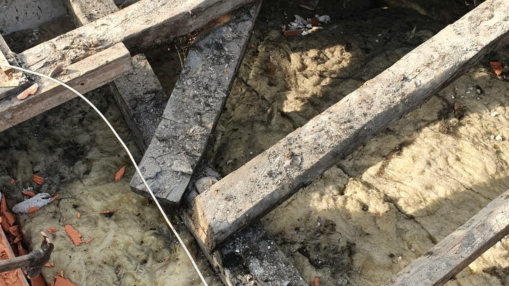
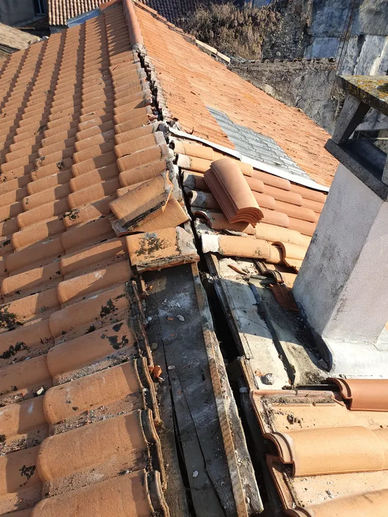
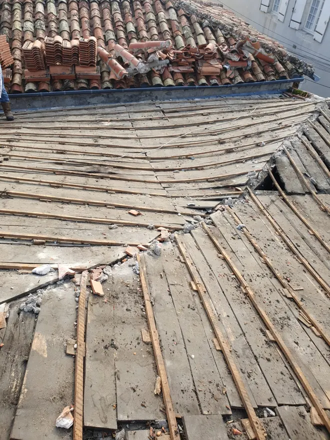
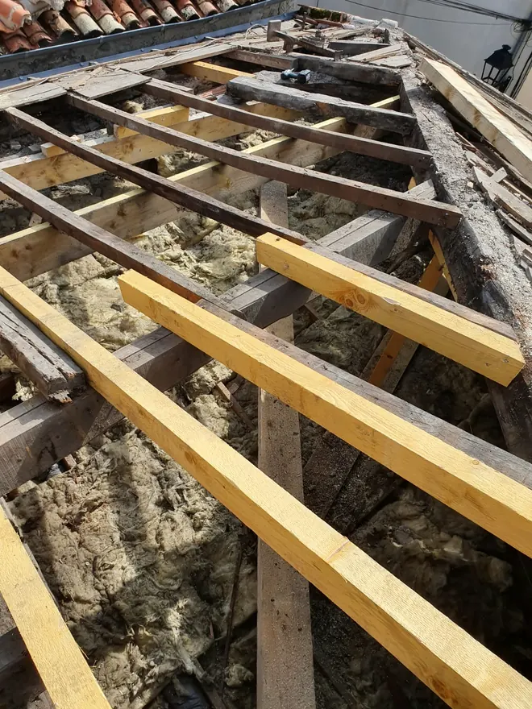
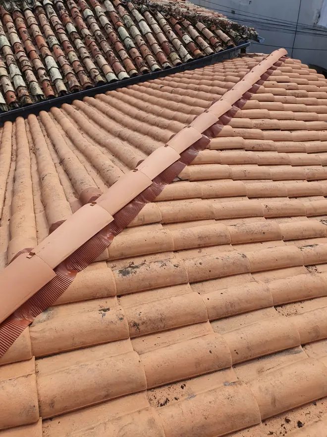

Réparation · fuite · Bordeaux et Gironde
Réparation de toiture et recherche de fuite à Bordeaux
Fuite active, tuiles envolées après un orage, dégât des eaux : nous intervenons rapidement à Bordeaux et en Gironde pour sécuriser la toiture, trouver l’origine de la fuite et réaliser les réparations nécessaires.
- Diagnostic sur le toit, pas depuis le sol
- Devis détaillé pour votre assurance
- Déplacement et devis gratuits
- Bâchage si nécessaire
Nous vous rappelons rapidement.
06 78 44 61 09Appelez directement, nous répondons.
06 78 44 61 09Une fuite de toiture ne se referme jamais toute seule.
Une tache au plafond, une odeur d’humidité dans les combles, une tuile de travers : les signes sont discrets et le défaut, lui, s’agrandit. Avec les orages d’été et les pluies d’hiver, chaque épisode fait gagner du terrain à l’eau.
- L’eau arrive loin de son entrée
- Elle chemine le long des liteaux et des chevrons avant d’apparaître. Réparer sous la tache, c’est réparer au mauvais endroit.
- La charpente prend l’eau
- Un bois qui reste humide travaille et pourrit. C’est le poste qui coûte le plus cher.
- L’isolant ne protège plus
- Une laine gorgée d’eau perd son pouvoir isolant et ne sèche pas d’elle-même dans des combles fermés.
- La facture change d’échelle
- Quelques tuiles à reprendre à l’automne, un pan à refaire au printemps : entre les deux, il n’y a qu’un hiver de pluie.
Trouver l’origine, pas seulement le symptôme
Une tache au plafond ne se situe presque jamais à l’aplomb du défaut : l’eau chemine avant d’apparaître. Nous inspectons les tuiles, le faîtage, les rives, les solins et la zinguerie pour trouver le point d’entrée réel et le traiter, plutôt que de masquer le symptôme.
Sur une toiture en tuile canal, les suspects habituels sont une tuile cassée ou glissée, un faîtage dont le mortier est tombé, un solin de cheminée décollé ou une gouttière qui déborde sous le premier rang.
Après un orage ou un coup de vent
Les orages d’été et les coups de vent d’hiver mettent les couvertures girondines à rude épreuve. Après un épisode violent, nous sécurisons d’abord (bâchage, tuiles instables), puis établissons un devis de réparation détaillé, utilisable auprès de votre assurance.
Sur ses chantiers.
Photos prises sur nos chantiers, pas dans une banque d’images.




Comment ça se passe.
- 01Vous appelez
L’artisan vous répond lui-même et qualifie l’urgence au téléphone. Si l’eau coule, il vous donne les gestes à faire tout de suite.
- 02Sécurisation
Si nécessaire, il bâche et met hors d’eau la toiture avant toute chose.
- 03Diagnostic sur le toit
Tuiles, faîtage, rives, solins, zinguerie et bois visibles : tout est contrôlé, photos à l’appui. C’est gratuit.
- 04Travaux + devis
Un devis écrit et détaillé, l’urgent séparé de ce qui peut attendre. Utilisable auprès de votre assurance.
Combien coûte une réparation de toiture ?
Aucun couvreur sérieux ne peut chiffrer sans avoir vu le toit. Le prix dépend de l’origine réelle de la fuite, du nombre de tuiles ou d’éléments à reprendre, de l’état des bois, de l’accès au toit (échafaudage ou non) et de l’urgence de l’intervention.
Sa méthode : il monte sur le toit, établit un diagnostic, puis un devis détaillé, gratuit et sans engagement. Le déplacement est gratuit lui aussi. Une réparation ciblée n’a rien à voir avec une réfection complète : le diagnostic sert justement à ne pas vous faire payer plus que nécessaire.
Recevoir mon devis gratuitUn artisan proche de chez vous.
Nous intervenons surtout à Bordeaux et dans la métropole (Mérignac, Pessac, Talence, Bègles, Lormont, Cenon, Le Bouscat, Bruges, Villenave-d’Ornon), et jusqu’à 100 km alentour : Libourne, Saint-Émilion, Créon, Cadillac, Langon, La Réole, Blaye, Arcachon et le bassin, le Médoc. Le déplacement pour le diagnostic est gratuit.
Questions fréquentes
Que faire en cas de fuite active ?
Mettez ce qui craint l’eau à l’abri, placez un récipient sous l’écoulement, coupez l’électricité de la pièce si l’eau approche d’un point lumineux, et appelez-nous. Ne montez pas sur le toit, surtout mouillé.
Comment trouvez-vous l’origine d’une fuite ?
En montant sur le toit et en remontant le chemin de l’eau : tuiles cassées ou glissées, faîtage, rives, solins de cheminée, gouttières.
Mon assurance prend-elle en charge ?
Après un orage ou une tempête, souvent oui, selon votre contrat. Le devis détaillé et les photos du point d’entrée servent à votre déclaration.